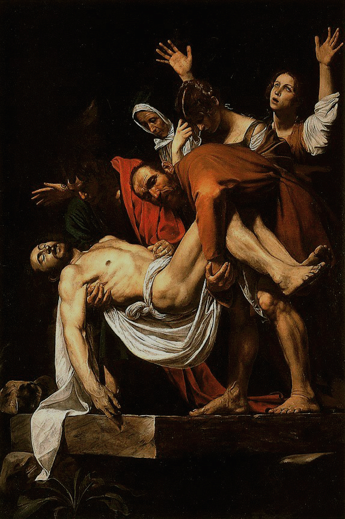
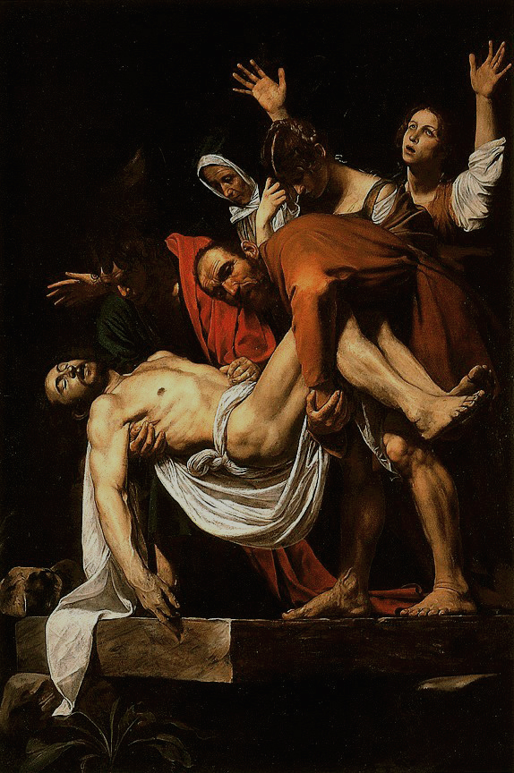

Caravaggio
Pochi artisti hanno suscitato tanto interesse e hanno rivoluzionato così profondamente la storia dell'arte come il pittore lombardo Caravaggio, vissuto nella seconda metà del Cinquecento. La sua vita travagliata, segnata da un delitto, una fuga disperata e un perdono giunto assieme alla morte, ha contribuito a creare il mito di Caravaggio, genio solitario e malvisto dalla Chiesa di Roma. Oltre la leggenda, la straordinaria novità dell'opera di questo grande protagonista, che aveva protettori illustri, risiede in due fattori di modernità assoluta: la resa della realtà in ogni forma anche brutale e la presenza della luce come apparizione simbolica di verità divina.


 

Homepage